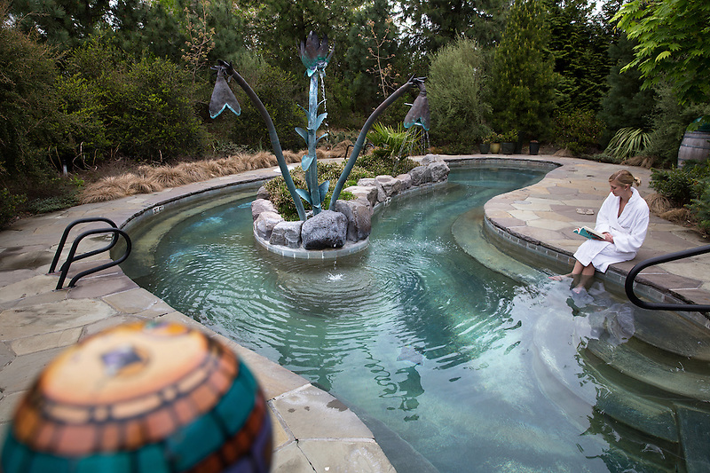
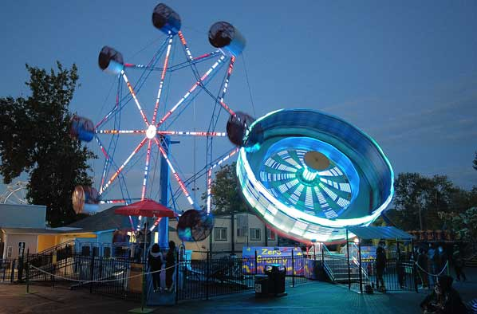
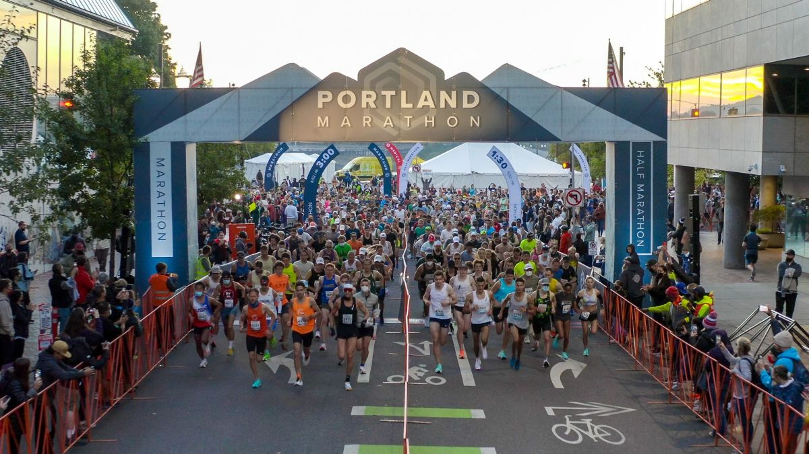

Spa day or a stay at McMenamins Edgefield

-
Edgefield’s 74 acres include a distillery, brewery, winery, numerous small bars, spa, soaking pool, golf
course, movie theater, event spaces, live music, and fires for gathering – create your own adventure!
-
Best time to go: Year-round.
-
Tip: Check early in the year when concerts are released and book your stay in conjunction with a show!
Scareground at Oaks

-
Make the most of Halloween at Oaks Amusement Park where you can walk through 3 different haunted houses and enjoy the park rides all in one evening!
-
Best time to go: This event takes place in October.
Portland Marathon

-
Taking runners along a loop of Portland along the east and west sides of the city’s Willamette River, the
Portland Marathon is an excellent way to see a lot of Portland in one great run. The race starts and finishes at
Waterfront Park, crossing four bridges and passing by some of the city’s most iconic landmarks.
-
Best time to go: This event takes place in October.